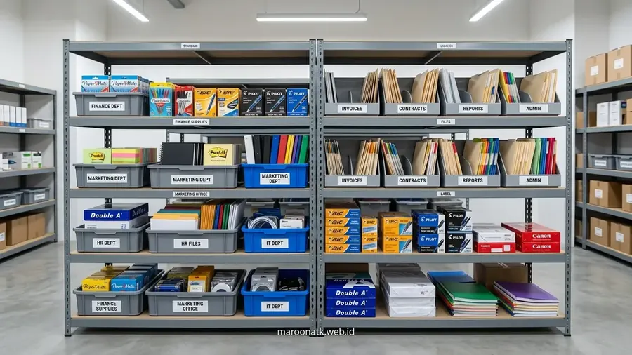

Mengapa Perusahaan Perlu Membandingkan Sistem Paket Pengadaan dan Pembelian Satuan?
Jawaban singkat: Sistem paket pengadaan alat tulis kantor dapat membantu perusahaan mengelola kebutuhan ATK secara lebih terstruktur dibanding pembelian satuan berulang. Efisiensi dapat berasal dari pengurangan frekuensi transaksi, administrasi, proses pemesanan, dan pengelolaan kebutuhan secara terencana. Namun, penghematan biaya aktual tetap bergantung pada volume kebutuhan, jenis barang, frekuensi pengadaan, harga kontrak, dan sistem distribusi.
Pengadaan perlengkapan kantor harian sering kali dipandang sebagai urusan operasional sederhana. Namun, bagi Procurement Manager dan Finance Controller, pengelolaan produk ATK melibatkan puluhan bahkan ratusan transaksi kecil setiap bulannya. Ketiadaan perencanaan yang rapi menyebabkan divisi operasional melakukan pembelian satuan secara mendadak setiap kali stok kertas, tinta, atau ordner habis.
Praktik pembelian satuan (ad-hoc purchasing) ini sering menciptakan ilusi bahwa perusahaan hanya mengeluarkan biaya saat barang benar-benar dibutuhkan. Padahal, jika dihitung secara komprehensif, biaya tersembunyi seperti pembuatan Purchase Order (PO) berulang, waktu approval manajemen, biaya kurir terpisah, dan tumpukan kuitansi yang harus direkonsiliasi oleh tim akuntansi justru menimbulkan beban operasional yang signifikan.
Aspek Kunci: Pembelian Satuan vs Paket Pengadaan Bulk
Untuk memahami dampak finansial dan operasional secara utuh, berikut adalah evaluasi dari beberapa dimensi utama pengadaan:
1. Frekuensi Transaksi dan Beban Administrasi
Pada sistem pembelian satuan, setiap departemen mengajukan kebutuhan secara sporadis. Tim purchasing harus menerbitkan PO baru, mencari toko terdekat, dan meminta persetujuan tanda tangan berulang kali. Beban administrasi ini menyita waktu staf yang seharusnya dapat dialokasikan untuk pekerjaan strategis lainnya.
Sebaliknya, pada sistem paket pengadaan, kebutuhan seluruh departemen dikonsolidasikan dalam satu jadwal berkala (misalnya awal bulan). Tim purchasing hanya memproses satu PO terpadu, mengurangi friksi birokrasi internal secara drastis.
2. Konsistensi Mutu dan Standardisasi SKU
Pembelian satuan di berbagai toko retail atau marketplace sering menghasilkan produk dengan merek, ketebalan kertas, atau kualitas tinta yang berbeda-beda. Hal ini dapat menimbulkan masalah kompatibilitas, seperti kertas bergramatur tidak standar yang menyebabkan mesin fotokopi macet (paper jam).
Dengan paket pengadaan B2B, perusahaan menetapkan spesifikasi baku (SKU standard) bersama supplier terpercaya, memastikan seluruh staf mendapatkan perlengkapan kantor dengan mutu yang konsisten.

Pengorganisasian stok ATK kantor secara terencana mempermudah monitoring ketersediaan dan mencegah pembelian darurat berbiaya tinggi.
3. Pengelolaan Invoice dan Kepatuhan Pajak
Pembelian eceran menghasilkan puluhan nota kasir fisik atau kuitansi non-PKP yang menyulitkan tim finance dalam mengklaim pajak masukan. Dokumen yang tercecer juga meningkatkan risiko temuan saat audit keuangan internal.
Sistem paket pengadaan corporate menawarkan invoice konsolidasi bulanan lengkap dengan Faktur Pajak elektronik (e-Faktur PPN 11%) yang valid dan rapi, memastikan transparansi akuntansi perusahaan terjamin penuh.
Tabel Perbandingan: Pembelian Satuan vs Paket Pengadaan
Berikut adalah tabel ringkasan perbandingan aspek operasional dan manajemen kedua metode pengadaan:
| Aspek Evaluasi | Pembelian Satuan (Ad-Hoc) | Paket Pengadaan (Bulk/Kontrak) |
|---|---|---|
| Frekuensi Transaksi | Lebih sering & tidak terprediksi | Dapat direncanakan secara berkala |
| Administrasi | Berulang, banyak dokumen PO manual | Lebih terstruktur dalam satu alur kerja |
| Kontrol Kebutuhan | Berdasarkan permintaan mendadak | Berdasarkan perencanaan kuota terukur |
| Invoice & Pembukuan | Berpotensi banyak transaksi terpisah | Dapat lebih terkoordinasi & terkonsolidasi |
| Monitoring Stok | Dipantau per transaksi terpisah | Berdasarkan paket per periode jelas |
| Efisiensi Proses | Bergantung pada volume dan waktu staf | Berpotensi lebih efisien secara menyeluruh |
Langkah Praktis Menyusun Paket Pengadaan yang Efisien
Bagi perusahaan yang ingin beralih dari pembelian satuan menuju skema paket yang terstruktur, berikut tahapan yang disarankan:
- Audit Riwayat Pembelian: Kumpulkan data pengeluaran ATK selama minimal satu kuartal untuk mengidentifikasi barang habis pakai berfrekuensi tinggi (seperti kertas HVS, pulpen gel, ordner, dan sticky notes).
- Standardisasi Daftar SKU: Tetapkan spesifikasi resmi produk agar seluruh unit kerja menggunakan standar mutu yang seragam.
- Penyusunan Jadwal Pengiriman: Sepakati jadwal pengiriman terjadwal (misalnya tanggal 1 atau 15 setiap bulan) guna mempermudah penerimaan barang oleh tim logistik kantor.
- Pemberlakuan Buffer Stock Minimal: Tentukan batas aman persediaan di gudang kantor guna mengantisipasi lonjakan kebutuhan mendadak tanpa harus melakukan pembelian eceran darurat.
Konsultasikan Skema Paket Pengadaan Kantor Anda
Dapatkan Rincian Paket Custom, Jadwal Pengiriman Terjadwal & SPH Resmi
Tim spesialis procurement B2B MAROON ATK siap membantu menyusun skema paket pengadaan ATK yang disesuaikan dengan kebutuhan perusahaan Anda.
Kesimpulan: Memilih Metode Pengadaan Sesuai Skala Operasional
Rangkuman Poin Keputusan
Kedua metode memiliki peruntukan yang berbeda dalam dinamika bisnis:
- Pembelian Satuan cocok untuk kebutuhan insidental dalam volume sangat kecil atau produk non-standar yang jarang digunakan.
- Paket Pengadaan Bulk adalah opsi paling rasional bagi perusahaan yang ingin menciptakan efisiensi administrasi, transparansi pembukuan keuangan, dan kelancaran suplai operasional harian.
Pertanyaan Umum (FAQ) Paket Pengadaan ATK
Paket pengadaan alat tulis kantor adalah skema penyediaan ATK yang dikelompokkan secara terstruktur berdasarkan estimasi kebutuhan berkala (bulanan atau kuartalan) untuk seluruh divisi perusahaan dalam satu kontrak kerja sama terpadu.
Efisiensi biaya aktual sangat bergantung pada volume kebutuhan, jenis barang, dan stabilitas harga kontrak. Keunggulan utamanya terletak pada efisiensi total proses pengadaan, yakni memangkas beban administrasi, mengurangi frekuensi approval, dan menyederhanakan rekonsiliasi invoice.
Keuntungannya mencakup jaminan ketersediaan stok fisik operasional, standardisasi kualitas barang antar departemen, kontrol anggaran yang lebih terencana, dan kemudahan audit dokumen keuangan dengan e-Faktur resmi.
Perusahaan dapat memulai dengan mengaudit rekapitulasi konsumsi ATK selama 3-6 bulan terakhir, menetapkan daftar SKU standar, menyusun jadwal drop pengiriman rutin, dan memilih supplier B2B yang mampu menerbitkan SPH resmi berkop perusahaan.

Arby Ardiansyah
Spesialis strategi procurement B2B berpengalaman dalam manajemen rantai pasok perlengkapan kantor, perancangan sistem bulk purchasing, dan tata kelola efisiensi anggaran korporat.